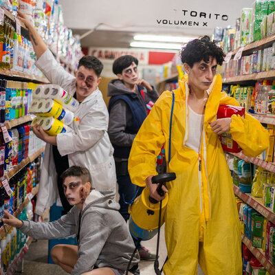
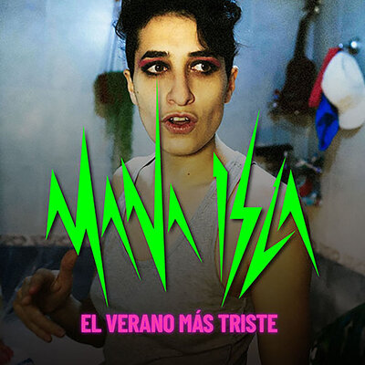
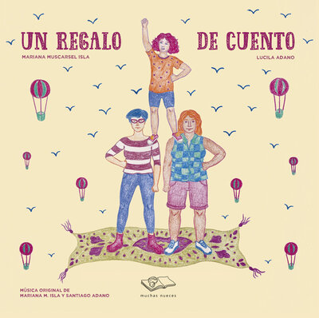
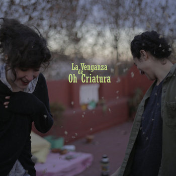
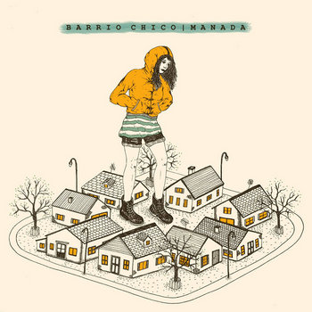
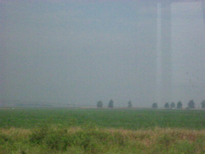
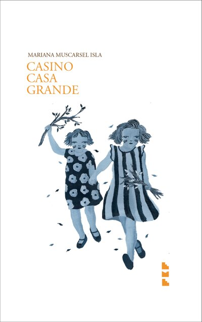
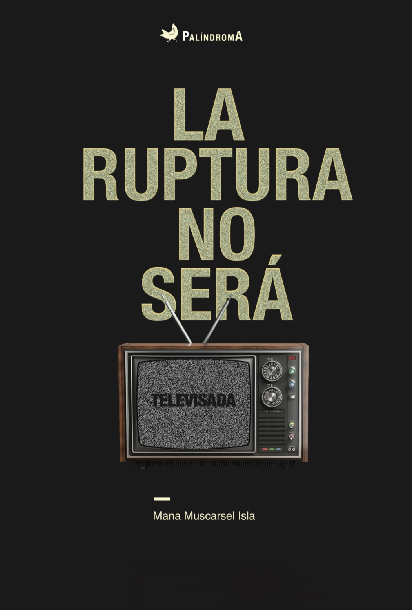
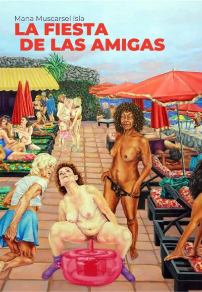
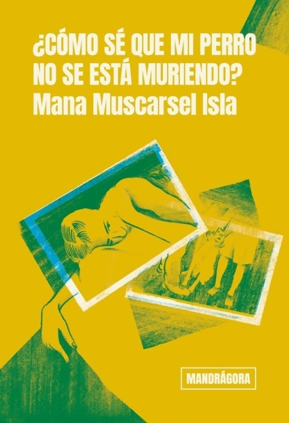

Bio
Mana Muscarsel Isla nació en 1987 en Fiske Menuco (General Roca), Patagonia, Argentina.
Es escritora, performer, compositora y psicóloga especialista en géneros y sexualidades.
Sus obras han sido publicadas en Argentina, México, España y los Estados Unidos.
Música



Un Regalo de Cuento
Info
- "Un regalo de cuento se aleja del relato infantil esperable. No es un camino de la heroína donde lo único que cambia es el género de la protagonista. No es un cuento pedagógico que tiene como enseñanza el hecho de que las nenas pueden hacer lo mismo que los nenes o que explica que está bien tener dos mamás. No son canciones que hablen sobre el amor y sus diversas posibilidades. No es un libro machaconamente feminista ni militantemente lesbiano. Y sin embargo, es todas esas cosas." Laura Arnés



Videoclips
Libros




Cómo Sé Que Mi Perro No Se Está Muriendo
Ediciones
- Mandrágora Editora, Argentina, 2024 · comprar AR · comprar intl
Notas
Entrevistas
Psicología
Terapia online desde una perspectiva queer.
queerpsi.com →